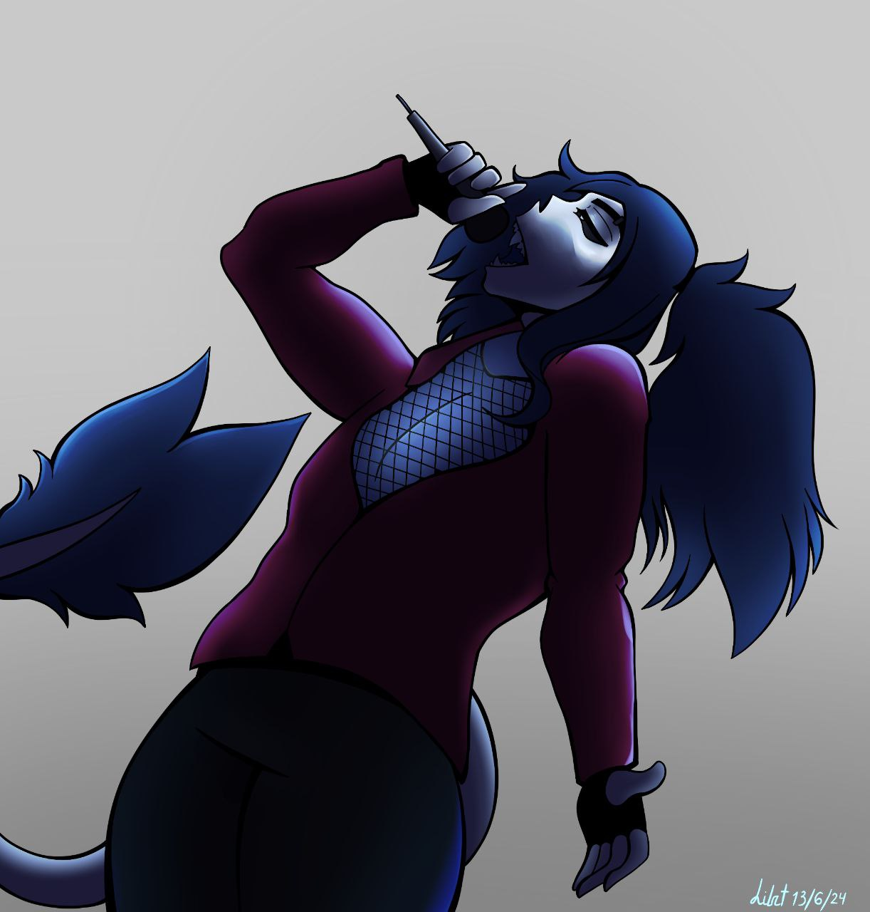
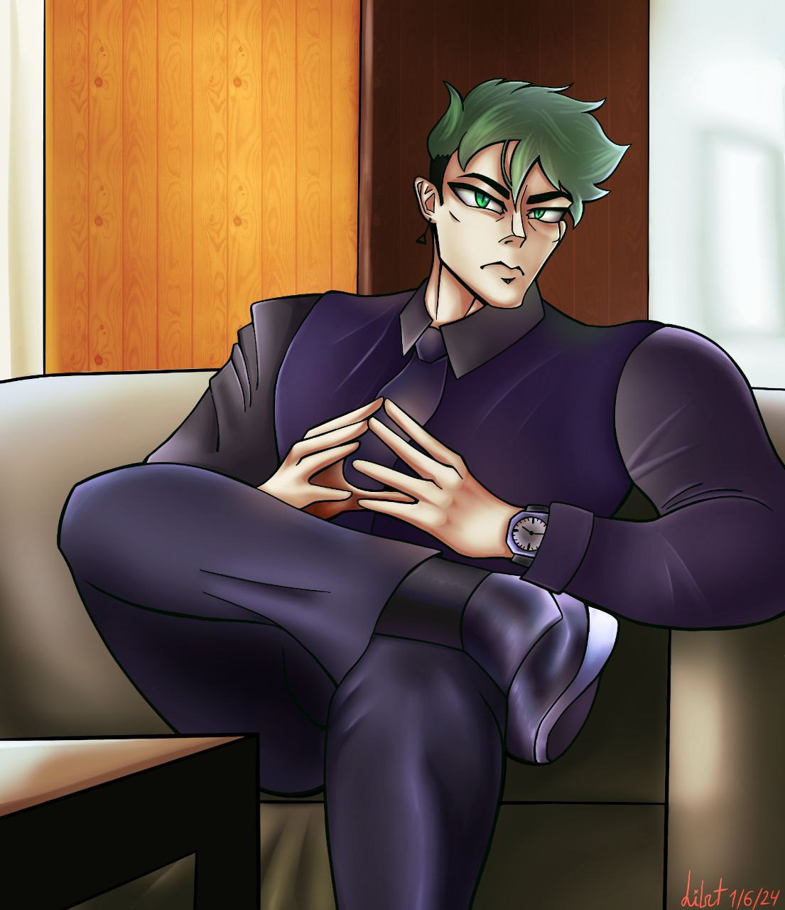
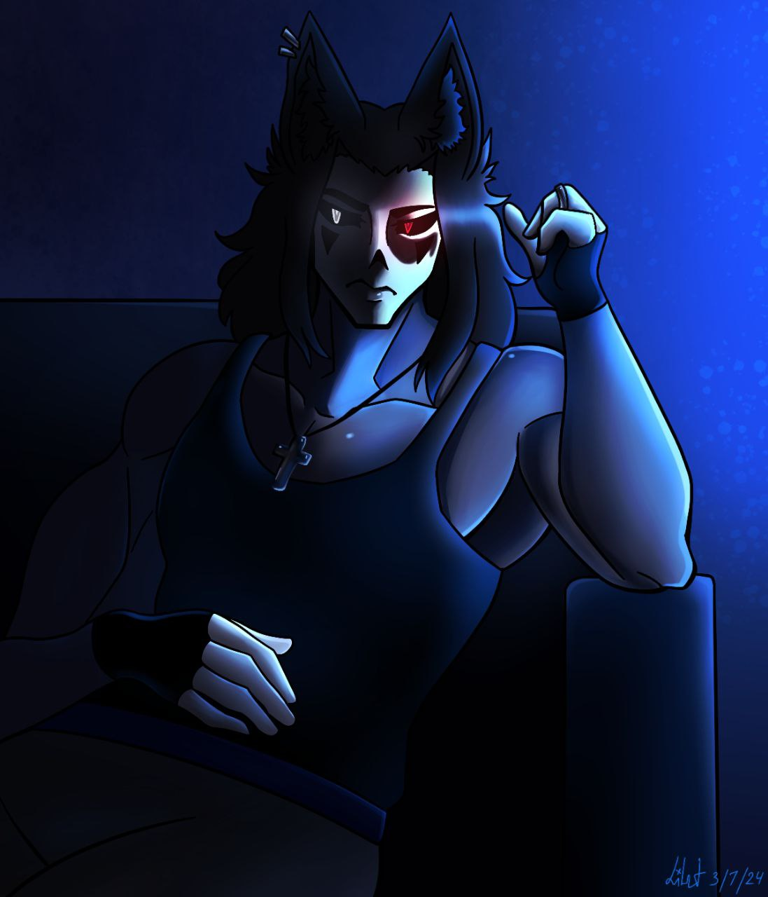
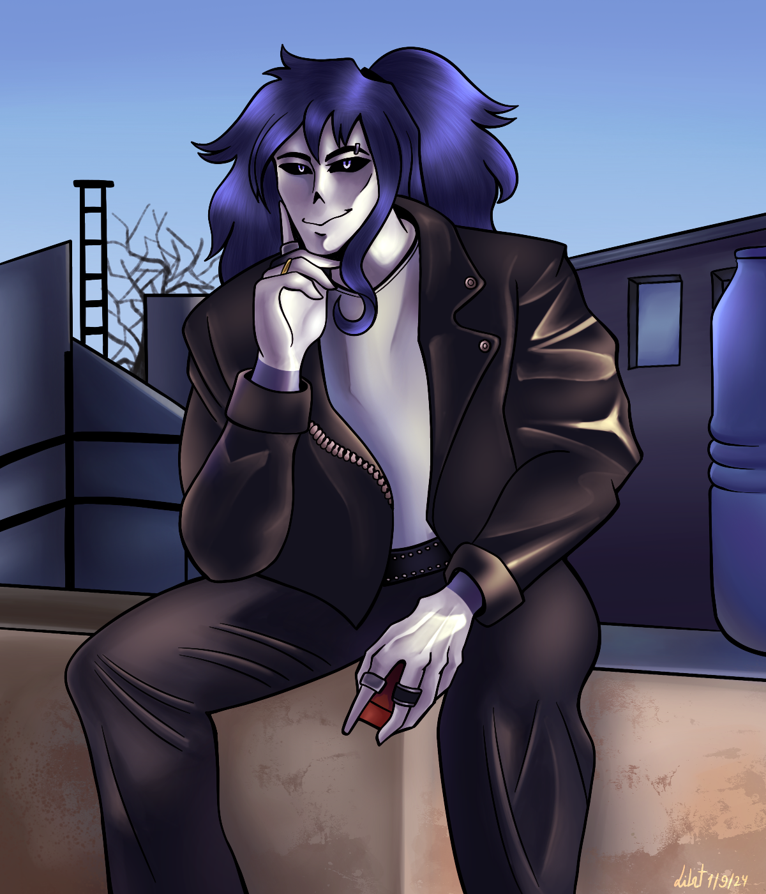

ПРО МЕНЕ
Народилась 6 квітня 2006 року Львові. Навчаюся в ЛКДІУМ ім.І.Труша на 4 курсі. Я обрала цей коледж заради графічного дизайну. Зацікавленість в цій сфері мені дали логотипи та ілюстративні плакати,які я так часто бачила в інтернеті.
Ось саме посилання на коледж в якому я навчаюсь.
Я бачу себе більше як ілюстратора, однак я вибрала професію графічного
дизайнера бо хотіла мати роботу по цій спеціальності. Я також надалі маю глубокий інтерес в створенні логотипів,тому маю надію що все буде як я планую. В мене м'ягкий характер,незважаючи на те яка зла я можу
бути.
Я - амбіверт. Я не часто спілкуюся з людьми довкола,але також люблю заводити нові знайомства і проводити відкриті бесіди.
Деколи вихожу з друзями погуляти.
Захоплююсь малюванням,слухаю музику та час від час читаю книжки. В мене немає окремих хоббі окрім
читання,геймінгу та ілюстрування власних персонажів. Планую розвиватись в сфері гейм деву та створити власний
ігровий проект.
МОЇ ОСОБИСТІ ІЛЮСТРАЦІЇ
   ДЕКІЛЬКА ФАКТІВ ПРО МЕНЕ
- Я найстарша в сім'ї та маю двох молодших сестер
- Я малюю вже 11 років
- Маю чотири собаки і кішку
- Хочу зайнятись шиттям та косплеєм в скорому майбутньому
- Я немаю художників в родовому дереві
Дякую за увагу :]